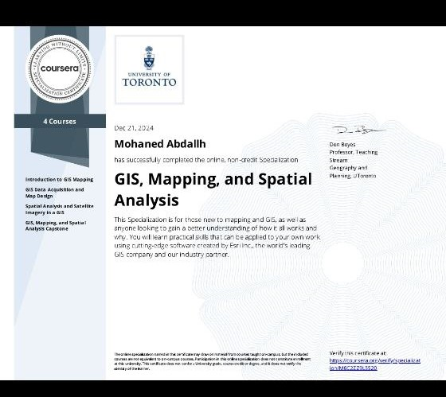

Mohaned Abdallh Musa
GIS Specialist | Surveying Engineer | Riyadh, Saudi Arabia
Email: mohnedabdllh@gmail.com | Phone: +966569849279
My Projects
NDVI Vegetation Analysis – Al Managel Area
Generated NDVI maps to assess vegetation conditions using satellite imagery and ArcGIS tools during the flood season.

COVID-19 GIS Dashboard for Sudan
Built an interactive GIS-based dashboard to monitor and visualize COVID-19 case data across Sudan using Excel and ArcGIS Online.
Khartoum Public Transport Network Analysis
GIS-based network analysis to assess and optimize routes using ArcGIS Network Analyst.
My Certificates
GIS, Mapping, and Spatial Analysis
Institution: University of Toronto (via Coursera)
Date: December 21, 2024
This certificate was awarded upon successful completion of a specialization focused on GIS, mapping, spatial thinking, and geospatial analysis using ArcGIS and other tools.
